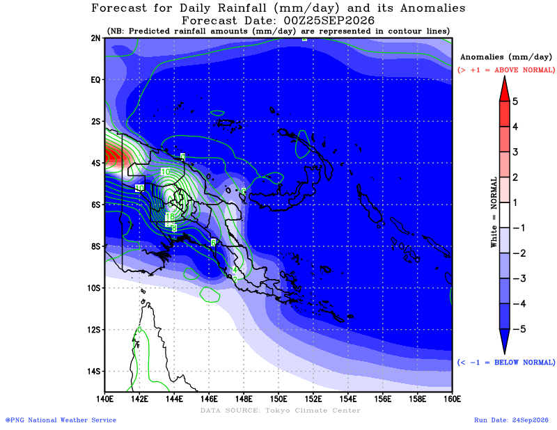
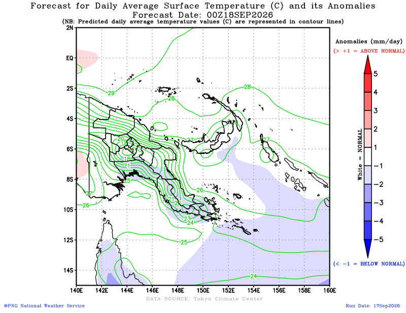
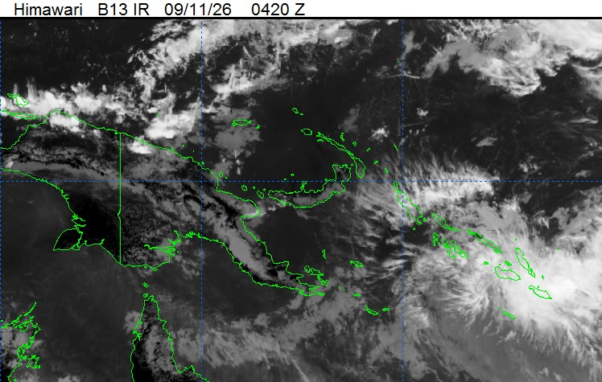
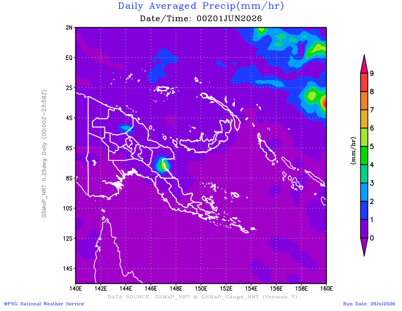

About the Combined Drought Index (CDI)
The Combined Drought Index (CDI) is being developed jointly by Papua New Guinea's National Weather Service (NWS) and FAO to assess drought severity and trigger anticipatory action, complementing NWS's existing Drought Early Warning System. It is based on published research (Isaev E, Yuave N, Inape K, Jones C, Dawa L & Sidle RC, 2024, Agricultural Drought-Triggering for Anticipatory Action in Papua New Guinea, Water 16, 2009) and computed at province level, monthly, from free/open, programmatically-accessible data sources with a historical archive back to 1996.
| Indicator | Source | Flag rule | Weight |
|---|---|---|---|
| ENSO (Relative Niño3.4) | NOAA | 0.5 if alert, 1 if declared | 20% |
| Indian Ocean Dipole (DMI) | NOAA | 0.5 if alert, 1 if declared | 10% |
| Present rainfall (SPI-1) | CHIRPS, Climate Hazards Center (UCSB) | 0.5 if -0.5≤SPI<0, 1 if SPI<-0.5 | 20% |
| Present soil moisture | ERA5-Land, ECMWF | 0.5 if 10-15% below normal, 1 if >15% | 20% |
| Present vegetation health | FAO ASIS | 0.5 if VHI<0.4, 1 if VHI<0.3 | 10% |
| Forecast rainfall (SPI-3) | ECMWF SEAS5 | 0.5 if -1≤SPI<0, 1 if SPI<-1 | 20% |
Combination: these six flags are combined into a weighted sum ranging from 0 to 1. CDI > 0.6 indicates the emergence of drought.
Example: PNG, July 2026 (interactive — click a province)
July's CDI is based on June observations plus a 3-month (July-September) rainfall forecast. Click any province for its CDI, indicator flags, and underlying values. Source: NWS/FAO CDI presentation and data (real per-province results, not illustrative).
Recent CDI components (interactive)
Historical CDI time series (1996-present, interactive)
The historical CDI record for any province can be used to inform and calibrate anticipatory-action thresholds. Dashed line marks the 0.6 drought threshold.
Executive interpretation
The national overview, graphs, tables, map and operational interpretation are designed to reflect the latest available ASIS/GIEWS screening period where that update is available, while the overview also reports the current PNG live processing workspace date and drought/frost analysis windows.
Province screening details
Overview focus
This dashboard provides a province-level screening view of vegetation condition, drought monitoring and field verification priorities.
It combines live ASIS/GIEWS screening information with the separate PNG live processing workspace for drought and frost review.
Population exposure estimates should be interpreted alongside dedicated overlay analysis, field observations and sector-specific assessment.
Drought and frost processing status
Source: This summary provides the latest drought and frost screening windows from the live processing workspace and complements the full interactive workspace. It is intended to give users a quick public-facing overview.
The latest drought and frost screening overview will appear here when available.
ENSO / IOD outlook
About this card: El Nino-Southern Oscillation (ENSO, measured by the ONI index) and the Indian Ocean Dipole (IOD, measured by the DMI index) are national-scale climate indices, not province-level measurements. They provide background context for the composite biophysical stress score and are not blended into it pixel-by-pixel.
Climate driver context will appear here when available.
Highest vegetation stress provinces
Stress class distribution
Interactive risk map
Live ASIS/GIEWS drought and vegetation stress
Source and method: This section summarises the latest available FAO vegetation-health screening update for Papua New Guinea. Non-analytical classes are excluded before province summaries are calculated.
Province ranking by vegetation condition
Vegetation condition guide
< 0.35: high vegetation stress.
0.35-0.50: moderate vegetation stress.
0.50-0.65: watch / below-normal vegetation condition.
> 0.65: lower current vegetation stress.
These values help compare current vegetation condition between provinces and identify where field verification should be prioritised.
Live ASIS provincial table
| Rank | Province | Vegetation index | Stress class | Recommended verification priority | Plain-language meaning |
|---|
Integrated priority assessment
About this section: This view combines live vegetation condition, rainfall deficit, frost screening, cropland relevance, and population exposure into a single integrated priority framework for Papua New Guinea.
How to read the integrated priority indicators
Interpretation guide: These indicators are screening and prioritisation metrics. They help compare provinces and identify where closer technical review or field verification may be needed. They are not final impact declarations.
| Indicator | What it means | How to interpret it |
|---|---|---|
| Composite stress | A combined environmental stress score that brings together the main hazard signals used in the dashboard, including vegetation stress, rainfall deficit, and frost screening. | Use this as the main overall measure of current biophysical stress. Higher values mean stronger combined stress conditions. |
| Agricultural priority | A prioritisation score that reflects how relevant the combined stress pattern is for agricultural concern and follow-up. | Use this to understand where agricultural systems may need closer monitoring. It is a prioritisation metric, not a direct crop-loss estimate. |
| Exposure priority | A hotspot-style prioritisation score that combines stress conditions with exposure considerations to support targeting. | Use this for relative prioritisation between provinces. It helps identify where stress and exposure are combining into higher concern. |
| Priority class | The categorical label assigned from the integrated priority logic, such as Low, Watch, Moderate, High, or Severe. | Use this as the quick-read summary for comparison across provinces. |
| Population exposed | The estimated number of people located inside the mapped stress zones used by the integrated workflow. | Use this as a screening estimate of potential exposure. It is not an official affected-population total and should be validated with field and sector information. |
Integrated priority provincial table
| Province | Composite stress | Agricultural priority | Exposure priority | Priority class | Population exposed |
|---|
Population exposure summary
About this section: This tab reports people located inside composite biophysical stress zones. The exposure counts are derived from the composite stress surface and gridded population data, then summarised by province for public-facing interpretation.
Population exposure table
| Province | Composite stress | Stress class | Population exposed | High exposure population | ASIS mean | Rainfall % normal | Soil moisture % normal | Frost mean °C |
|---|
Operational response framework
Field verification approach: Verification should be coordinated through DAL, NARI, NDC, provincial disaster offices, district agriculture officers and relevant partner teams. Verification can use geotagged photos, GPS points, crop condition forms, water-source checks, community/key informant interviews and approved data-collection platforms such as KoboToolbox, ODK, Survey123 or other government/partner systems.
| ASIS stress group | Interpretation | Recommended action |
|---|---|---|
| High | Current vegetation condition indicates strong stress relative to normal and should be treated as the highest verification priority. | Immediate district/province verification, crop and water checks, food-security screening, rapid advisory messaging and escalation where field evidence confirms impacts. |
| Moderate | Vegetation condition is below normal and should be monitored closely for further deterioration. | Rapid crop and rainfall review, repeat checks, local advisory support and targeted verification if market, water or crop concerns are already emerging. |
| Watch | Conditions are below normal but not yet in the highest concern class. | Routine monitoring, district updates and trigger-based follow-up where reports worsen or additional indicators also show stress. |
| Lower | Lower current vegetation stress in the latest dekad. | Routine monitoring, maintain surveillance and verify localised reports if communities flag issues not visible at province scale. |
Field verification checklist
| Check | What to collect | Who can verify |
|---|---|---|
| Crop condition | Photos, GPS points, crop type, damage level, garden age and whether damage is drought-related or from another cause. | DAL/NARI officers, district agriculture officers, provincial teams and partner field teams. |
| Water availability | Water-source status, distance to water, quality concerns, low-flow or drying sources. | Provincial disaster offices, district teams, WASH partners and community focal points. |
| Food access | Meal changes, wild foods, market prices, shortages and coping mechanisms. | Provincial/district teams, partners and community key informants. |
| Hazard attribution | Separate drought stress from frost, pests, fire, flood or market shocks where possible. | Multi-sector assessment teams and technical specialists. |
Live Processing Workspace
Purpose of this tab: This section links to the separate Streamlit-based processing workspace used for live review, processing and export of climate-risk layers. It is separate from the main public briefing dashboard.
Embedded source: png-climate-workspace-v1.streamlit.app. If the embedded view does not load, use the button above to open the processing app directly.
PNGNWS Outlook
Official national reference: This tab links to public outlook and satellite products published by the PNG National Weather Service. These products complement the dashboard screening outputs and provide an official national forecast context for interpretation and briefing.
Official links open in a new tab. Preview images below are synced automatically into this dashboard on a schedule.
Forecast and imagery previews
Preview note: The previews below are mirrored automatically into this dashboard from public PNGNWS products. They refresh on a schedule so the tab remains stable without manual uploads.
31-Day Rainfall Preview (PNG domain)

PNG-domain daily rainfall forecast preview from the 31-day outlook.
31-Day Temperature Preview (PNG domain)

PNG-domain near-surface temperature forecast preview.
Himawari Satellite Preview

Quick-look infrared satellite frame from the PNGNWS Himawari page.
GSMaP Daily Rainfall Preview

Daily precipitation preview image available from the PNGNWS product stack.
How to use this tab
Use the seasonal and monthly forecast links to compare official national outlook products with the live ASIS/GIEWS vegetation screening, composite stress patterns, and exposure summaries shown elsewhere in the dashboard.
The satellite link can support rapid visual review of current cloud patterns and synoptic conditions, while Public Weather provides day-to-day national reference information.
Suggested interpretation
Use PNGNWS products as the official national forecast context, and use the dashboard as a screening and prioritisation layer for provincial follow-up.
Where both the PNGNWS outlook and the dashboard indicators point in the same direction, confidence in follow-up targeting is stronger. Where they differ, additional technical review and field verification may be needed.
EarthMap
Purpose of this tab: EarthMap is a separate FAO geospatial platform for exploring contextual layers such as rainfall, vegetation condition, land cover, fire, surface water and other indicators relevant to drought and agricultural risk screening.
Embedded source: png.earthmap.org. If the embedded view is restricted by the external site, open EarthMap directly using the button above.